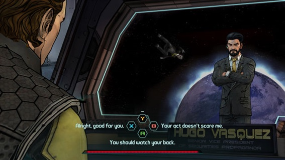

Inteligência Artificial no Desenvolvimento de Jogos Digitais(){
Games
Inteligência Artificial se define como a inteligência que máquinas e programas de computador são capazes de possuir; sendo utilizada em games para simular eventos da natureza e ações humanas, como reação a determinados eventos e planejamento, sendo aplicada, principalmente, ao controle de comportamento de NPCs (Non Playable Characters – Personagens não jogáveis, em tradução literal) para que estes apresentem comportamento inteligente.
O atual crescimento do estudo no campo das IAs tem permitido a criação de Inteligências capazes de lidar com maiores quantidades de informações. Isto permite uma simulação mais próxima dos pequenos detalhes da realidade, abrindo novas oportunidades a serem exploradas no desenvolvimento de jogos.
Skyrim (Bethesda - 2011) é um game famoso por sua quantidade colossal de conteúdo devido ao seu grande mapa, composto por cavernas, montanhas, acampamentos e vários outros pontos exploráveis, além de várias quests, NPCs, itens e objetivos. Encontramos também games com várias rotas de histórias definidas por escolhas do jogador, como Dishonored (Bethesda - 2012), The Walking Dead (Telltale - 2012) e inFamous (Sucker Punch - 2009). Mesmo sendo jogos que permitem o jogador realizar vários gameplays completamente diferentes uns dos outros, ainda é possível mapear todas as possibilidades destes jogos.

As decisões do jogador influenciam o desenvolvimento da história em Tales from The Borderlands (Telltale Games - 2015)
Mas o que acontecerá quando não for mais possível mapear as possibilidades de um jogo? O ponto quando uma IA torna-se capaz de se reescrever e se melhorar é conhecido como Singularity (Singularidade, em tradução literal), em referência ao centro de um buraco negro, um ponto onde não conseguimos ver além, isto é uma metáfora ao fato de que quando este ponto for atingido pela Inteligência Artificial, não somos capazes de prever o que irá acontecer em seguida. Quando relacionada aos jogos digitais, este tipo de inteligência artificial poderia ser ensinada sobre o mundo real e seus pequenos detalhes para que a realidade fosse simulada de maneira mais convincente, com eventos imprevisíveis e reativos à toda e qualquer ação que o jogador possa vir a realizar, não sendo mais possível mapear as possibilidades e ocorrências de um jogo, deixando-o tão imprevisível quanto a vida real. Embora fascinante, esta oportunidade deverá ser explorada com cuidado, pois a quantidade de conteúdo criada seria única e massiva, impossibilitando que os jogadores explorem tudo o que um único game teria a oferecer, criando situações frustrantes onde o player nunca completaria um game.

Interações entre Games e IAs tendem a trazer novas oportunidades de desenvolvimento e criação de conteúdo para a indústria
Por fim, hoje se faz evidente que a evolução das IAs pode levar à Singularidade e que, caso aconteça, terá um desenvolvimento imprevisível até que tal ponto seja atingido; desta mesma maneira, a influência no mundo dos games não pode ser antecipada, mas, se aproveitada de maneira inteligente, permitirá a criação de experiências únicas e até o momento consideradas impossíveis, onde esperamos que os resultados sejam enriquecedores para a ciência e indústria de desenvolvimento de jogos digitais.
Referências:
Extra Credits – The Singularity
Por: Pedro Braz
}